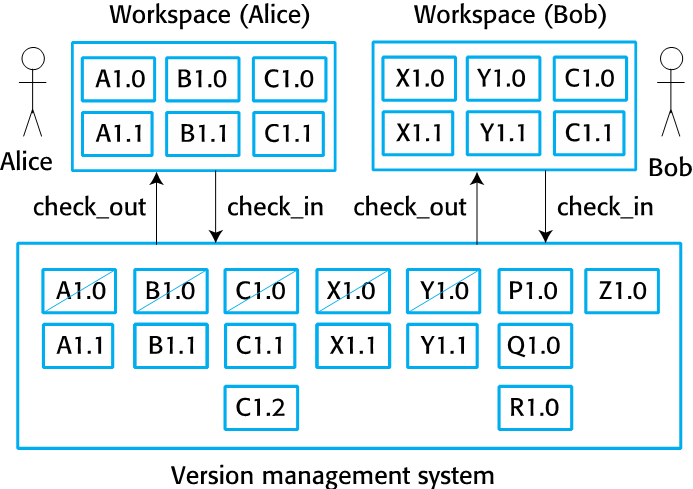
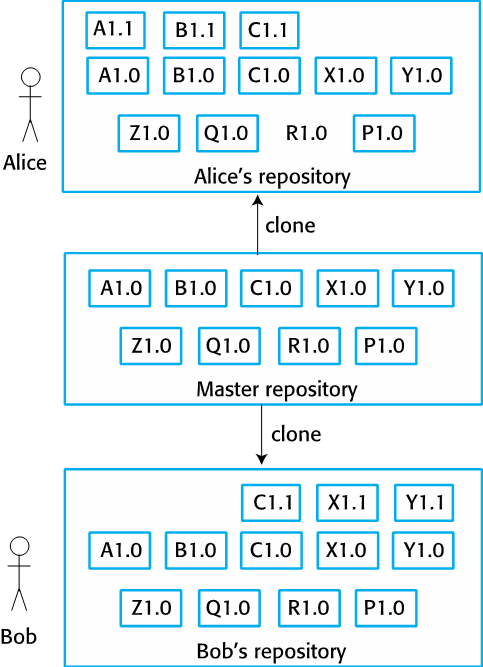
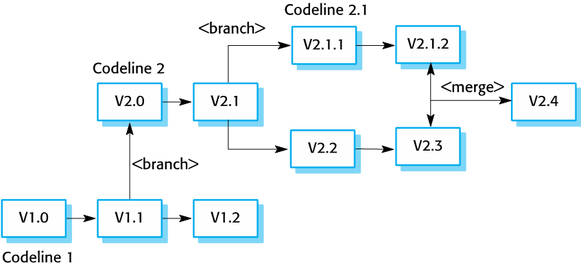

class: center, middle # Kapitel 25: Configuration Management Timo Wortmann --- # Agenda - Einführung vom Configuration Management - Version Management - System Building - Change Management - Release Management --- ## Einführung zum Configuration Management - Softwaresysteme verändern sich häufig - Configuration Management = Richlinien, Prozesse und Werkzeuge für das Verändern von Software Systemen - Ohne CM: - Falsche Version bearbeiten - Falsche Version veröffentlicht - Vergessen des Speicherorts von Komponenten --- ## Einführung zum Configuration Management  --- ## Baseline, Codeline, Mainline  --- ## Version Management - Versionierung von Software und Komponenten - Nutzung von Versionskontrollsystemen - Zentralisiert, z.B. Subversion - Verteilt, z.B. Git - Unabhängige Arbeit von mehreren Entwicklern gleichzeitig - Komprimierung von Dateien --- ## Zentralisierte Versionskontrollsysteme <div style="margin-top:30px;">  </div> --- ## Verteilte Versionskontrollsysteme <div style="margin-top:30px;">  </div> --- ## Branching und Merging <div style="margin-top:30px;">  </div> --- ## System Building - Aufbau einer ausführbaren Softwareversion - Build Skripte - Integration zu Versionskontrollsystemen - Minimale Neukompilierung - Erstellung von ausführbaren Dateien - Automatisierte Tests - Benachrichtigungen bei Fehlern und Ereignissen - Generierung von Dokumentation --- ## Continuous Integration  --- ## Change Management - Aufnahme von Änderungen - Priorisierung - Umsetzung und Dokumentation --- ## Change Management - Ablauf <div style="margin-top:30px;"> <img style="width:100%;height:300px" src="assets/25.14-The_change_management_process.png"/> </div> --- ## Release Management - Veröffentlichung von Software für Endnutzer - ausführbare Dateien - Konfigurationsdateien - sonstige Daten, z.B. Übersetzung - Installationsprogramme - Dokumentation - Verpackung und Werbung --- ## Einfluss auf Releases - Konkurrenz - Marketing - Änderungen an der Plattform - Technische Qualität --- ## Update von Releases - Auf aufeinander abhängige Änderungen achten! - Beispiel: - Version 1.0 einer Software wird veröffentlicht - Version 1.1 installiert Datenbank - Version 1.2 installiert zusätzliche Attribute in DB - Kunde updated von Version 1.0 direkt auf 1.2 - Vereinfacht durch Software as a Service (SaaS) --- ## Überblick zum Abschluss  --- ## Referenzen - Sommerville, Ian (2015). Software Engineering (10th. ed.), 730-756.